校园互助
发布任务、接单、跑腿、占座与双方沟通，构成平台的核心服务链路。
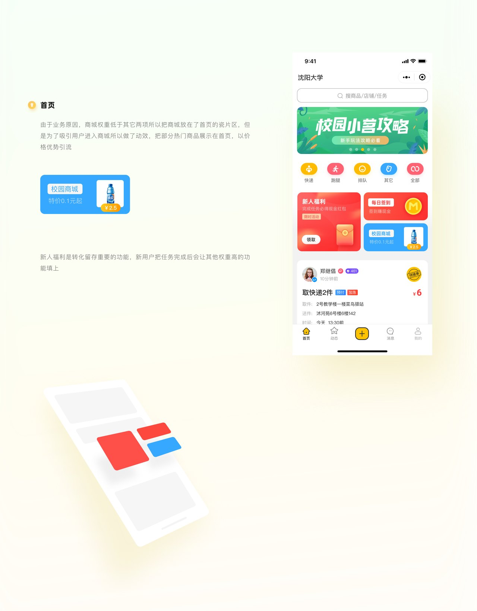
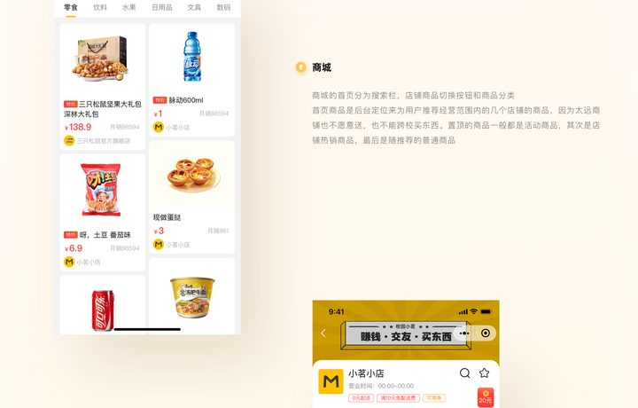
校园商城 / 商品与店铺以校园高频生活场景为出发点，将原本分散的互助、购物、交流与激励机制组织到同一产品体验中。互助是核心业务，其余模块共同补充校园生活服务。
发布任务、接单、跑腿、占座与双方沟通，构成平台的核心服务链路。
校园商家入驻、商品浏览、团购与送货上门。
动态内容、兴趣交流、个人主页与校园信息。
通过签到、任务、动态和购物获得积分并参与兑换。
项目时间：2020-11 / V1.0。以上业务来自现有项目复盘资料。
把产品背景从抽象的“校园平台”还原成真实的日常任务，让用户需求与功能结构建立对应关系。
代取快递、跑腿、占座等需求，希望有人可以及时响应。
购买零食和日用品，希望找到校园周边店铺并送到宿舍。
寻找共同兴趣的人，分享学习、生活与校园信息。
通过接单赚取生活费，也通过积分参与平台激励。
依据现有复盘中的用户研究与 5W 场景分析，提炼需求动机；不将未经核实的年龄占比或市场数字包装成真实研究结论。
临时取件、跑腿、占座，尽量减少寻找帮助和沟通成本。
通过实名与骑手认证建立接单信任，获得任务收益。
通过动态、社团、话题与个人主页建立校园关系。
浏览信息、发布动态
发布取件、跑腿任务
接单、执行任务
浏览商城、购买商品
互动、兑换积分
业务入口各自独立，身份、信誉、消息和积分能力在关键流程中提供支持。
任务发布 · 接单 · 沟通 · 完成 · 结算
商品浏览 · 下单 · 商家接单 · 配送
动态 · 互动 · 个人主页 · 兴趣关系
签到 · 任务 · 积分累计 · 兑换
从现有十条设计决策中抽取四条最能体现产品思考的内容，保留问题、策略与原稿依据。
发布者、接单者、旁观者关注的信息不同，因此任务列表和详情采用角色视角区分状态。
设计策略 / 状态分层通过加急机制提高任务曝光；相关付费规则以原稿为准，不扩展未提供的业务规则。
设计策略 / 加急入口收件人、电话和地址等历史信息可复用，降低重复填写成本。
设计策略 / 历史信息复用通过实名、信誉分和认证体系展示可信状态，同时允许用户选择不公开认证信息。
设计策略 / 身份与信誉核心业务用真实界面和明确步骤展开，突出信息录入、任务判断、接单与状态变化。
发布者选择任务类型后填写必要信息，系统将任务组织为可浏览、可判断、可接单的任务卡片。
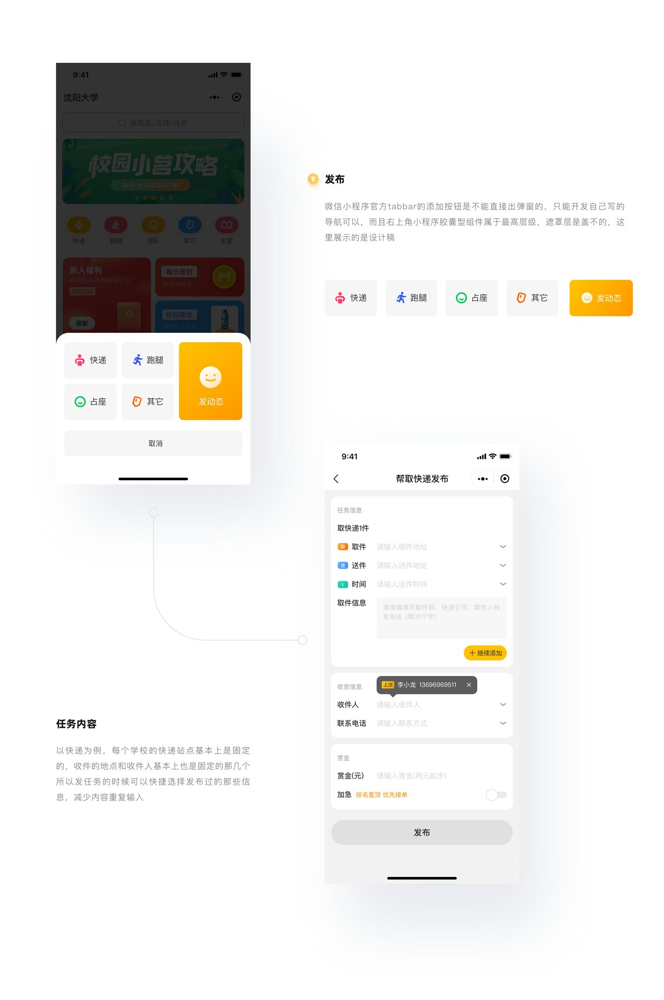
任务详情集中呈现任务信息、赏金、时间与当前状态；接单后进入双方沟通、完成与待结算流程。
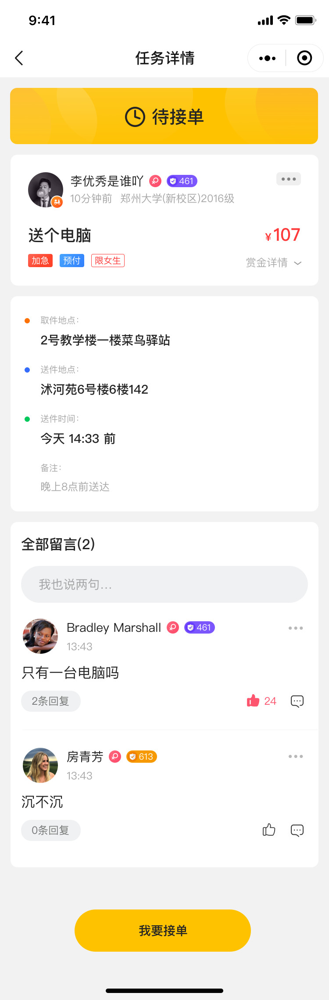
身份信息与消息能力围绕任务双方展开，既提供可信线索，也控制不必要的打扰。
Feed 展示发布时间、头像昵称、信誉分与性别；个人主页突出实名信誉信息。
实名认证、骑手认证、店铺认证；用户可选择不展示认证信息。
聊天入口随任务状态出现，仅任务发布者与接单者双方可沟通。
消息详情显示已读状态，并可跳转对应任务详情，减少沟通误会。
将认证、个人主页与消息设计放在同一章节，说明产品如何通过身份信任支撑交易流程。
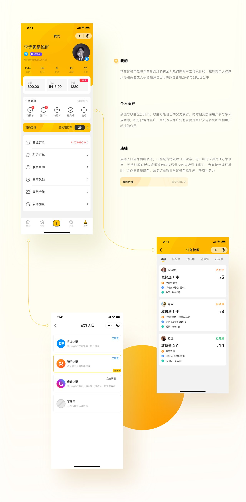
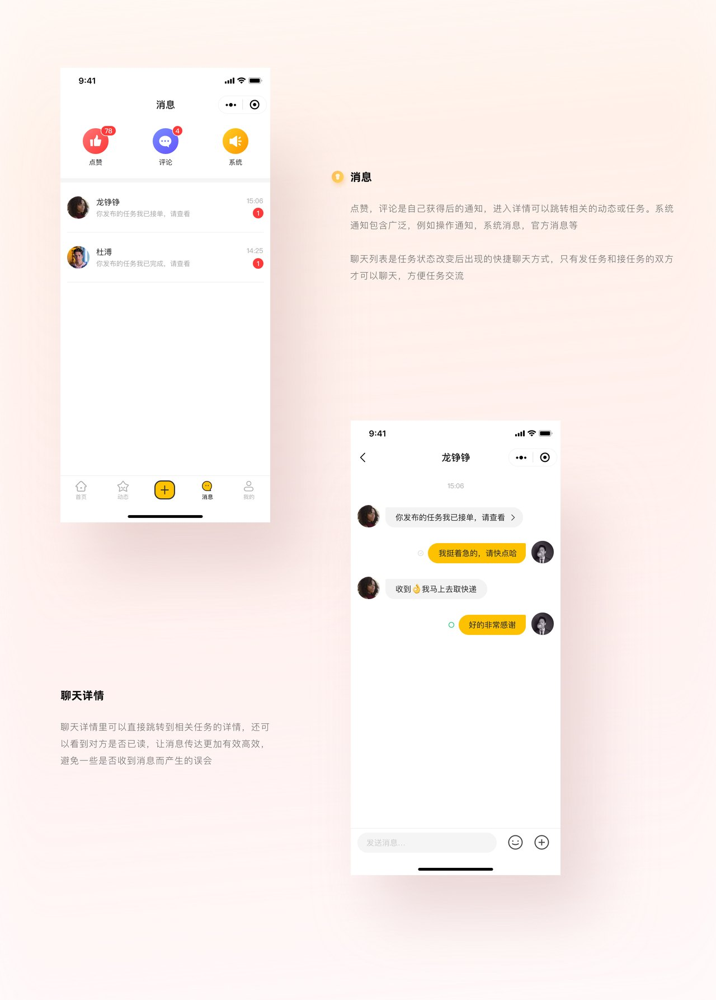
商城以校园商家入驻、休闲零食和日用品为主要内容，支持线上下单与校园内配送。
商城内容包含商品、活动和店铺入口。原稿中还区分了明确购买目标与活动发现两种购物路径。
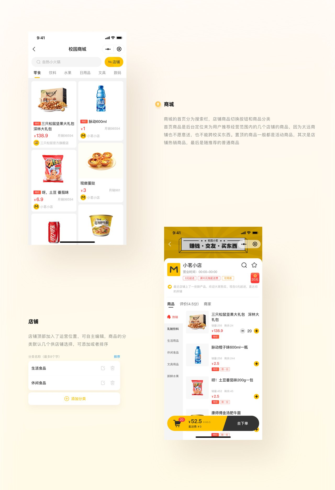
社区定位于大学生网络社区，提供交流空间与校园信息入口；内容类型来自原项目说明。
通过动态浏览、互动、社团与个人主页，将内容消费和用户关系连接起来。
积分通过签到、任务、动态和购物等行为累计，并在积分商城兑换奖励。
用户通过平台内的日常行为获得积分，形成持续参与的动力。
进入积分商城参与抽奖、兑换红包或实物商品。
同时保留收益提现路径：原稿记录收益满 10 元可提现至微信零钱。具体业务是否仍适用，以项目当时设计稿为准。
以下六段 GIF 对应原案例中的交互演示。图片保持完整比例，不裁切手机内容。

首页、动态、消息、我的四个主入口。

快递、跑腿、占座、其它与发动态。
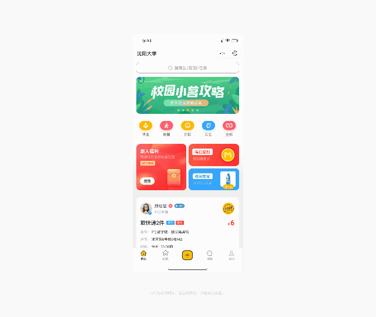
发布面板与 Tabbar 状态联动。

积分获取路径与任务列表。
帖子、社团、任务与身份标签。
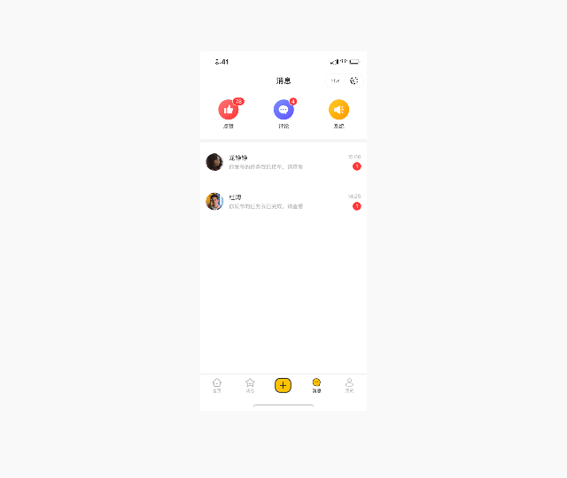
点赞、评论、系统通知与任务聊天。
规范内容沿用原稿中的栅格、圆角、组件、图标、情绪版、颜色与字体原则；具体颜色数值需要从原始色板取样后补齐。
设计稿基准尺寸 375×812px，以 4 或 4 的倍数组织模块间距。
首页卡片、商品卡片、列表信息与按钮采用不同圆角层级。
多人共用组件，减少重复设计，提升统一性并降低交接成本。
功能、任务和首页分类图标统一尺寸与线条；Tabbar 一个图标对应一个文字。
简化交互、提升效率，以活泼配色贴合年轻校园人群。
原稿以黄色为主色，红蓝为辅助色，绿色点缀；中文 PingFang SC，英文 San Francisco。
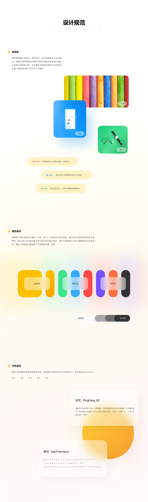
总结现有资料中能够确认的工作范围，不将界面示意数字包装为线上业务成绩。
项目资料中覆盖的业务 / 功能模块
原始复盘拼版展板
交互动效演示 GIF
现有材料可确认：多模块界面设计、设计规范、用户研究方法、运营活动设计与交互动效演示。
项目资料：2020-11 / V1.0。此处“7+”描述资料覆盖模块，不代表已上线功能数量。
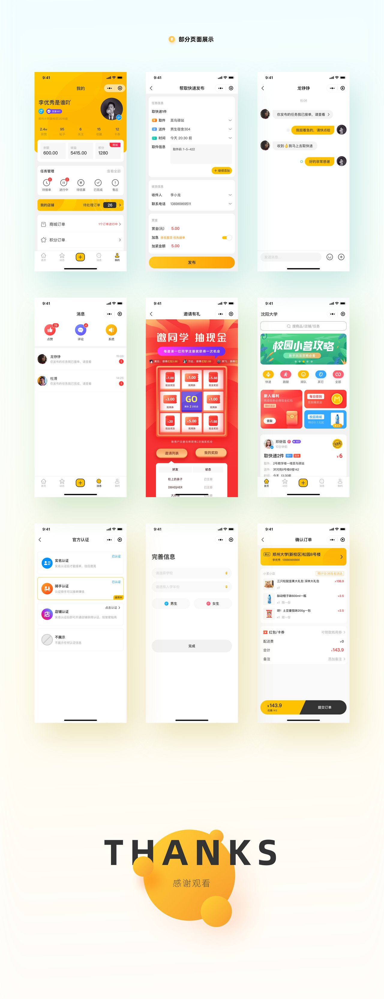